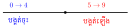

មេរៀន ចំនួនគត់អានមេរៀនពេញ →
១. សញ្ញាណចំនួនគត់
និយមន័យ
ចំនួន \(\displaystyle 0, 1, 2, 3, 4, \dots\) ហៅថាចំនួនគត់។ ចំនួនគត់ដែលគ្មានលេខ \(\displaystyle 0\) ហៅថា ចំនួនគត់ធម្មជាតិ (\(\displaystyle 1, 2, 3, 4, \dots\))។
២. លំដាប់នៃចំនួនគត់
ជាទូទៅ
- គ្រប់ចំនួនគត់ដែលស្ថិតនៅខាងស្តាំ ធំជាងចំនួនគត់ដែលស្ថិតនៅខាងឆ្វេង។
- គ្រប់ចំនួនគត់ដែលស្ថិតនៅខាងឆ្វេង តូចជាងចំនួនគត់ដែលស្ថិតនៅខាងស្តាំ។
៣. ចំនួនគូ និងចំនួនសេស
ជាទូទៅ
- ចំនួនគូ ជាចំនួនគត់ដែលចែកដាច់នឹង \(\displaystyle 2\)។
- ចំនួនសេស ជាចំនួនគត់មិនចែកដាច់នឹង \(\displaystyle 2\)។
៤. ប្រមាណវិធីលើចំនួនគត់
៤.១ វិធីបូកនិងវិធីដកនៃចំនួនគត់
ជាទូទៅ
- បើ \(\displaystyle a + b = c\) នោះ \(\displaystyle a = c - b\) និង \(\displaystyle b = c - a\)។
- បើ \(\displaystyle a - b = c\) នោះ \(\displaystyle a = c + b\) និង \(\displaystyle b = a - c\)។
៤.២ វិធីគុណ និងវិធីចែកនៃចំនួនគត់
ជាទូទៅ
បើ \(\displaystyle a \times b = c\) នោះ \(\displaystyle a = c \div b\) និង \(\displaystyle b = c \div a\)។
សម្គាល់
- បើ \(\displaystyle a \times 15 = 450\) នោះ \(\displaystyle a = 450 \div 15 = 30\)
- បើ \(\displaystyle a \div 7 = 35\) នោះ \(\displaystyle a = 7 \times 35 = 245\)
៥.១ លក្ខណៈនៃវិធីបូក
ជាទូទៅ
ចំពោះគ្រប់ចំនួនគត់ \(\displaystyle a, b\) និង \(\displaystyle c\)៖
- \(\displaystyle a + b = b + a\) និង \(\displaystyle a + (b + c) = (a + b) + c\)
- \(\displaystyle a + 0 = 0 + a = a\)
(\(\displaystyle 0\) ជាធាតុត្រឹមចំពោះវិធីបូក)
៥.២ លក្ខណៈនៃវិធីគុណ
លក្ខណៈវិធីគុណ
ចំពោះគ្រប់ចំនួនគត់ \(\displaystyle a, b\) និង \(\displaystyle c\)៖
- លក្ខណៈត្រឡប់៖ \(\displaystyle a \times b = b \times a\)។
- លក្ខណៈផ្គុំ៖ \(\displaystyle a \times (b \times c) = (a \times b) \times c\)។
- លក្ខណៈបំបែក៖
\(\displaystyle a(b + c) = (a \times b) + (a \times c)\)។ - ធាតុត្រឹម៖ \(\displaystyle a \times 1 = 1 \times a = a\)
(\(\displaystyle 1\) ជាធាតុត្រឹមចំពោះវិធីគុណ)។
៦. លំដាប់នៃប្រមាណវិធី
ជាទូទៅ
- ចំពោះកន្សោមដែលមានតែវិធីបូកនិងវិធីដក គេត្រូវធ្វើប្រមាណវិធីពីឆ្វេងទៅស្តាំ។
- ចំពោះកន្សោមដែលមានតែវិធីគុណនិងវិធីចែក គេត្រូវធ្វើប្រមាណវិធីពីឆ្វេងទៅស្តាំ។
- បើកន្សោមមានប្រមាណវិធីទាំងបួន គេត្រូវធ្វើវិធីគុណ ឬវិធីចែកមុនវិធីបូក ដកពីឆ្វេងទៅស្តាំ។
- បើកន្សោមមួយមានវង់ក្រចក គេត្រូវធ្វើប្រមាណវិធីក្នុងវង់ក្រចកជាមុនសិន។
- បើកន្សោមមួយមានវង់ក្រចកនិងតង្កៀប គេត្រូវធ្វើប្រមាណវិធីក្នុងវង់ក្រចកមុនរួចធ្វើប្រមាណវិធីនៅក្នុងតង្កៀបជាក្រោយ។
៧. ការបង្គត់ចំនួន
ជាទូទៅ
ដើម្បីបង្គត់ចំនួន គេត្រូវពិនិត្យមើលតួលេខដែលស្ថិតនៅខាងស្តាំបន្ទាប់នៃខ្ទង់ដែលចង់បង្គត់៖
- បង្គត់ចុះ៖ បើតួលេខនោះមានតម្លៃពី \(\displaystyle 0, 1, 2, 3, 4\) (រក្សាតួខ្ទង់ដដែល រួចប្តូរតួខាងស្តាំជា \(\displaystyle 0\))។
- បង្គត់ឡើង៖ បើតួលេខនោះមានតម្លៃពី \(\displaystyle 5, 6, 7, 8, 9\) (បូកបន្ថែម \(\displaystyle 1\) លើខ្ទង់បង្គត់ រួចប្តូរតួខាងស្តាំជា \(\displaystyle 0\))។

ឧទាហរណ៍បង្គត់ខ្ទង់ដប់
- \(\displaystyle 643 \xrightarrow{\text{បង្គត់ខ្ទង់ដប់}} 640\) (ព្រោះ \(\displaystyle 3 < 5\))
- \(\displaystyle 647 \xrightarrow{\text{បង្គត់ខ្ទង់ដប់}} 650\) (ព្រោះ \(\displaystyle 7 \ge 5\))
៨. ការេ និងគូបនៃចំនួនគត់
ការេនៃចំនួនគត់៖ ជាលទ្ធផលនៃការគុណចំនួននោះនឹងខ្លួនវាចំនួន ២ ដង។
\[a^2 = a\times a\]
\[\text{ឧទាហរណ៍៖ } 5^2 = 5 \times 5 = 25\]
គូបនៃចំនួនគត់៖ ជាលទ្ធផលនៃការគុណចំនួននោះនឹងខ្លួនវាចំនួន ៣ ដង។
\[a^3 = a\times a \times a\]
\[\text{ឧទាហរណ៍៖ } 2^3 = 2 \times 2 \times 2 = 8\]
ឫសការេ និងឫសគូប
- បើ \(\displaystyle x^2 = a\) នោះ \(\displaystyle x=\pm \sqrt{a}\) (\(\displaystyle a\geq 0\))
- បើ \(\displaystyle x^3 = a\) នោះ \(\displaystyle x=\sqrt[3]{a}\) (គ្រប់ \(\displaystyle a\))
សម្គាល់
ចំពោះ \(\displaystyle \sqrt{100} \, , \, \sqrt[3]{27}\)
- សញ្ញា \(\displaystyle \sqrt{\phantom{x}} \, , \, \sqrt[3]{\phantom{x}}\) ហៅថា រ៉ាឌីកាល
- \(\displaystyle 100\) និង \(\displaystyle 27\) ហៅថា រ៉ាឌីកង់។